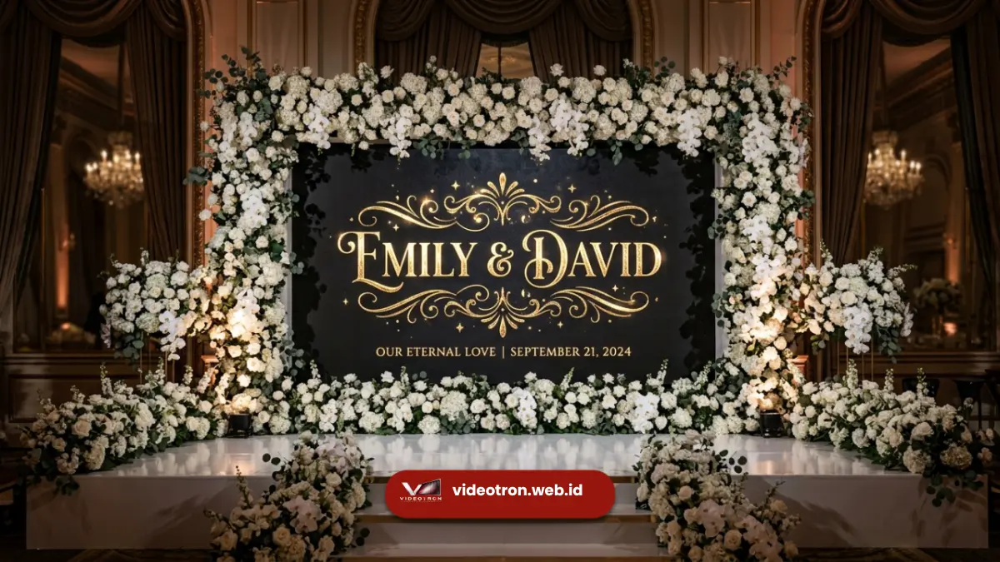

Konsep videotron wedding yang populer meliputi animasi nama pengantin, slideshow foto prewedding, video perjalanan cinta, hingga motion graphic tema floral atau minimalis modern.
Setiap konsep dipilih untuk memperkuat suasana emosional acara sekaligus memberikan tampilan visual yang lebih hidup dibanding dekorasi statis. Pemilihan konsep yang tepat membuat momen pernikahan semakin berkesan bagi pasangan dan tamu undangan.
Poin Penting Konsep:
- Animasi nama pengantin menjadi konsep videotron paling banyak digunakan pada sesi pelaminan.
- Slideshow foto prewedding dan video cinematic memperkuat nuansa emosional acara.
- Motion graphic tema floral, minimalis, atau tradisional dapat disesuaikan dengan dekorasi venue.
- Konten videotron dapat berbeda antara sesi akad dan sesi resepsi.
- Kolaborasi dengan tim kreatif membantu menghasilkan konsep yang selaras dengan tema pernikahan.
- 1. Apa Saja Konsep Konten Videotron yang Populer untuk Wedding?
- 2. Bagaimana Videotron Dapat Disesuaikan dengan Tema Pernikahan?
- 3. Penyesuaian untuk Tema Modern Minimalis
- 4. Penyesuaian untuk Tema Tradisional atau Adat
- 5. Penyesuaian untuk Tema Floral atau Garden Party
- 6. Apa Perbedaan Konten Videotron untuk Sesi Akad dan Resepsi?
Apa Saja Konsep Konten Videotron yang Populer untuk Wedding?
Konsep konten videotron yang populer untuk wedding meliputi animasi nama pengantin dengan tipografi elegan, slideshow foto prewedding, video dokumenter perjalanan hubungan pasangan, serta motion graphic bertema floral atau minimalis modern.
Beberapa konsep yang paling banyak diminati:
- Animasi nama pengantin dengan efek tipografi bergerak sebagai identitas utama pelaminan
- Slideshow foto prewedding yang ditampilkan bergantian sepanjang sesi resepsi
- Video cinematic perjalanan cinta pasangan sebagai pembuka acara
- Motion graphic tema floral, rustic, minimalis, atau tradisional sesuai konsep dekorasi keseluruhan
Pemilihan konsep sebaiknya disesuaikan dengan tema besar pernikahan agar seluruh elemen visual, mulai dari dekorasi fisik hingga tampilan digital, terasa selaras dan menyatu. Untuk memahami lebih jauh tentang penggunaan videotron untuk wedding secara menyeluruh, mulai dari ukuran hingga instalasi, baca panduan lengkap artikel pilarnya.
Bagaimana Videotron Dapat Disesuaikan dengan Tema Pernikahan?
Videotron dapat disesuaikan dengan tema pernikahan melalui pemilihan warna, tipografi, dan elemen grafis pada konten digital yang ditampilkan, sehingga selaras dengan palet warna dan gaya dekorasi venue secara keseluruhan.
Penyesuaian untuk Tema Modern Minimalis
Untuk tema modern minimalis, konten videotron umumnya menggunakan palet warna netral, tipografi bersih, dan animasi sederhana tanpa elemen dekoratif berlebihan agar selaras dengan konsep dekorasi yang clean dan elegan.
Penyesuaian untuk Tema Tradisional atau Adat
Untuk tema tradisional atau adat, konten videotron dapat menampilkan motif budaya, warna khas daerah, dan elemen grafis yang mencerminkan identitas budaya pasangan, sehingga tetap menghormati nilai adat sambil menghadirkan sentuhan modern.
Penyesuaian untuk Tema Floral atau Garden Party
Untuk tema floral atau garden party, motion graphic dengan elemen bunga bergerak dan warna pastel dapat memperkuat suasana romantis yang selaras dengan dekorasi bunga segar di sekitar panggung.

Penyesuaian visual videotron agar selaras dengan tema dekorasi pernikahan.Apa Perbedaan Konten Videotron untuk Sesi Akad dan Resepsi?
Konten videotron untuk sesi akad umumnya lebih sederhana dan khidmat, sedangkan konten untuk sesi resepsi cenderung lebih dinamis dengan variasi foto, video, dan animasi yang lebih banyak sesuai suasana perayaan.
Perbedaan konten pada kedua sesi:
- Sesi akad: menampilkan nama pengantin, kaligrafi, atau elemen visual yang tenang dan khidmat sesuai suasana ijab kabul
- Sesi resepsi: menampilkan slideshow foto, video ucapan, dan animasi dinamis yang mendukung suasana perayaan bersama tamu undangan
- Transisi konten: videotron dapat mengganti tampilan secara halus antara sesi akad menuju sesi resepsi tanpa mengganggu jalannya acara
Perencanaan konten yang matang untuk kedua sesi ini membantu videotron berfungsi maksimal sepanjang rangkaian acara pernikahan.
Konsep videotron wedding yang tepat mampu memperkuat tema dan suasana emosional pernikahan, mulai dari animasi nama pengantin hingga motion graphic yang selaras dengan dekorasi venue. Wujudkan konsep videotron wedding yang estetik dan berkesan bersama videotron.web.id — konsultasikan ide dan tema pernikahan Anda sekarang.

Hawa Nadira
LED Technology Consultant dan Visual Educator
Konsultan dan spesialis solusi display digital berdedikasi tinggi yang fokus membagikan panduan edukatif mengenai penerapan teknologi layar LED videotron untuk kebutuhan interior modern di Indonesia.